<title>A Mark Per Report</title>
<link rel="stylesheet" href="https://fonts.googleapis.com/css2?family=EB+Garamond:ital,wght@0,400;0,500;1,400&family=IBM+Plex+Mono:wght@400;500&family=Inter:wght@400;500&display=swap">
<style>
  /* Deliberately one visual world: the marks can only be judged on the canvas
     they will sit on, so this page is that canvas — RTM's own tokens, lifted
     from assets/styles.css. No dark variant; a dark ground would misreport
     every image below. */
  :root {
    --canvas: #f7f7f7;
    --surface: #ffffff;
    --inverse: #141414;
    --ink: #252525;
    --body: #575657;
    --muted: #8a8a8c;
    --rule: #e0e0e0;
    --rule-strong: #cfcfcf;
    --flag: #8a5a3c;

    --serif: "EB Garamond", "Times New Roman", Times, serif;
    --sans: "Inter", -apple-system, BlinkMacSystemFont, "Helvetica Neue", Arial, sans-serif;
    --mono: "IBM Plex Mono", "Andale Mono", ui-monospace, SFMono-Regular, monospace;

    --measure: 37rem;
    --gutter: clamp(1rem, 5vw, 4.5rem);

    color-scheme: light;
  }

  * { box-sizing: border-box; }

  body {
    margin: 0;
    background: var(--canvas);
    color: var(--body);
    font-family: var(--sans);
    font-size: 15px;
    line-height: 1.6;
    -webkit-font-smoothing: antialiased;
  }

  .wrap { padding-inline: var(--gutter); }
  .measure { max-width: var(--measure); margin-inline: auto; }
  .wide { max-width: 96rem; margin-inline: auto; }

  img { max-width: 100%; height: auto; display: block; }

  .mono {
    font-family: var(--mono);
    font-size: 0.72rem;
    letter-spacing: 0.09em;
    text-transform: uppercase;
    line-height: 1.4;
  }

  h1, h2, h3 { font-family: var(--serif); font-weight: 400; color: var(--ink); margin: 0; }
  h1 { font-size: clamp(2.4rem, 6vw, 4rem); line-height: 1.02; letter-spacing: -0.01em; text-wrap: balance; }
  h2 { font-size: clamp(1.7rem, 3.4vw, 2.4rem); line-height: 1.12; text-wrap: balance; }
  h3 { font-size: 1.35rem; line-height: 1.2; }

  p { margin: 0 0 1rem; }
  a { color: inherit; }
  strong { color: var(--ink); font-weight: 500; }

  /* ---------- masthead ---------- */

  header.masthead {
    border-bottom: 1px solid var(--rule);
    padding-block: clamp(3rem, 8vw, 6rem) clamp(2.5rem, 5vw, 4rem);
  }
  .kicker { color: var(--muted); margin-bottom: 1.6rem; }
  .standfirst {
    font-family: var(--serif);
    font-size: clamp(1.15rem, 2.2vw, 1.4rem);
    line-height: 1.45;
    color: var(--body);
    max-width: 44ch;
    margin-top: 1.6rem;
  }
  .colophon {
    display: flex; flex-wrap: wrap; gap: 0.5rem 2.25rem;
    margin-top: 2.5rem; color: var(--muted);
  }
  .colophon b { color: var(--ink); font-weight: 400; }

  /* ---------- sections, numbered by the pilcrow the archive already uses ---------- */

  section { border-top: 1px solid var(--rule); padding-block: clamp(3rem, 7vw, 5.5rem); }
  section:first-of-type { border-top: 0; }
  .label { color: var(--muted); margin-bottom: 2rem; display: flex; gap: 0.6rem; align-items: baseline; }
  .label .pilcrow { font-family: var(--serif); font-size: 1rem; text-transform: none; letter-spacing: 0; color: var(--rule-strong); }
  .lede { font-size: 1.05rem; max-width: 62ch; }

  /* ---------- the three directions ---------- */

  .directions { display: grid; gap: 1px; background: var(--rule); border-block: 1px solid var(--rule); margin-top: 2.5rem; }
  @media (min-width: 56rem) { .directions { grid-template-columns: repeat(3, 1fr); } }
  .direction { background: var(--canvas); padding: 2rem 1.75rem 2.25rem; display: flex; flex-direction: column; gap: 0.85rem; }
  .direction .rank { color: var(--muted); }
  .direction h3 .verdict { display: block; font-family: var(--mono); font-size: 0.7rem; letter-spacing: 0.09em; text-transform: uppercase; color: var(--muted); margin-top: 0.5rem; }
  .direction p { margin: 0; font-size: 0.94rem; }
  .direction[data-pick="yes"] { background: var(--surface); }
  .specimen { height: 150px; display: grid; place-items: center; margin-bottom: 0.4rem; }
  .specimen img { max-height: 150px; width: auto; }
  .verdict-bad { color: var(--flag); }

  /* ---------- side-by-side page comparison ---------- */

  .compare { display: grid; gap: 2.5rem 2rem; margin-top: 2.5rem; }
  @media (min-width: 60rem) { .compare { grid-template-columns: 1fr 1fr; } }
  figure { margin: 0; display: flex; flex-direction: column; gap: 0.75rem; }
  figure img { border: 1px solid var(--rule); background: var(--canvas); }
  figcaption { color: var(--muted); }
  figcaption b { display: block; color: var(--ink); font-family: var(--serif); font-size: 1.05rem;
                 text-transform: none; letter-spacing: 0; margin-bottom: 0.3rem; }

  .single { margin-top: 2.5rem; }

  /* ---------- the measurements ---------- */

  .findings { margin-top: 2.5rem; border-top: 1px solid var(--rule-strong); }
  .finding {
    border-bottom: 1px solid var(--rule);
    padding-block: 1.35rem;
    display: grid; gap: 0.35rem 2rem;
  }
  @media (min-width: 48rem) {
    .finding { grid-template-columns: minmax(0, 13rem) minmax(0, 1fr) minmax(0, 11rem); align-items: baseline; }
  }
  .finding .what { color: var(--ink); font-family: var(--mono); font-size: 0.72rem;
                   letter-spacing: 0.09em; text-transform: uppercase; }
  .finding .says { margin: 0; }
  .finding .num { font-family: var(--mono); font-size: 0.78rem; color: var(--muted);
                  font-variant-numeric: tabular-nums; }

  /* ---------- the rule box ---------- */

  .rulebox {
    border: 1px solid var(--inverse);
    padding: clamp(1.5rem, 4vw, 2.5rem);
    margin-top: 2.5rem;
    background: var(--surface);
  }
  .rulebox p:last-child { margin-bottom: 0; }
  .rulebox .statement {
    font-family: var(--serif); font-size: clamp(1.35rem, 3vw, 1.85rem);
    line-height: 1.25; color: var(--ink); text-wrap: balance; margin-bottom: 1.1rem;
  }

  /* ---------- logo options ---------- */

  .options { margin-top: 2.25rem; border-top: 1px solid var(--rule-strong); }
  .option {
    border-bottom: 1px solid var(--rule);
    padding-block: 1.25rem;
    display: grid; gap: 0.3rem 1.5rem;
  }
  @media (min-width: 44rem) {
    .option { grid-template-columns: 2rem minmax(0, 14rem) minmax(0, 1fr); align-items: baseline; }
  }
  .option .letter { font-family: var(--mono); color: var(--muted); }
  .option .name { color: var(--ink); font-family: var(--serif); font-size: 1.1rem; }
  .option[data-pick="yes"] .name::after { content: " ← pick"; font-family: var(--mono); font-size: 0.66rem;
    letter-spacing: 0.09em; text-transform: uppercase; color: var(--muted); }
  .option p { margin: 0; font-size: 0.94rem; }

  /* ---------- open questions ---------- */

  .open { margin-top: 2.25rem; display: grid; gap: 1px; background: var(--rule); border: 1px solid var(--rule); }
  .open > div { background: var(--canvas); padding: 1.4rem 1.5rem; }
  .open h3 { font-size: 1.1rem; margin-bottom: 0.4rem; }
  .open p { margin: 0; font-size: 0.94rem; }

  footer { border-top: 1px solid var(--rule); padding-block: 3rem 4rem; color: var(--muted); }
  footer p { max-width: 60ch; }

  code { font-family: var(--mono); font-size: 0.86em; color: var(--ink); }
</style>

<header class="masthead wrap">
  <div class="wide">
    <p class="kicker mono">Reports that Matter &nbsp;·&nbsp; Issue #99 &nbsp;·&nbsp; 12 September 2026</p>
    <h1>A mark per report</h1>
    <p class="standfirst">Co-Star's imagery, measured rather than eyeballed &mdash; and three ways to give every report in the archive an image of its own, rendered against real pages.</p>
    <div class="colophon mono">
      <span><b>Status</b> &nbsp; Nothing shipped</span>
      <span><b>Needed</b> &nbsp; One direction picked</span>
      <span><b>Built</b> &nbsp; 3 of 10 reports</span>
    </div>
  </div>
</header>

<main class="wrap">
  <div class="wide">

    <section>
      <p class="label mono"><span class="pilcrow">&#182;</span> The decision</p>
      <h2>Three directions, one archive.</h2>
      <p class="lede">Every mark below is cut from a page of a report this archive has already published, rasterised from the PDF in that report's own repo. So the rights position is the report's own, already recorded &mdash; and the picture is drawn from the document it labels.</p>

      <div class="directions">
        <div class="direction">
          <p class="rank mono">Direction 1</p>
          <div class="specimen">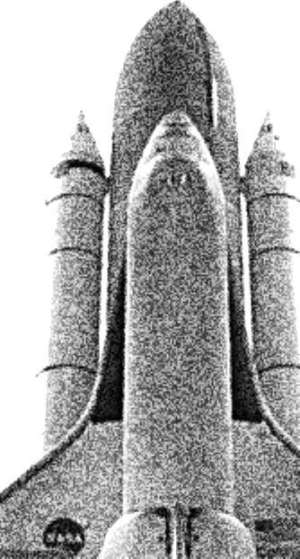</div>
          <h3>Cut&#8209;out<span class="verdict">Co-Star, straight</span></h3>
          <p>The object lifted off its ground and floated in the slot. Best at the report header, where 220px lets it read as a frontispiece.</p>
          <p>The cost is sourcing: a clean silhouette needs a cooperative background, and most pages in these reports are not that. Expect several of the ten to need a mask painted by hand.</p>
        </div>
        <div class="direction" data-pick="yes">
          <p class="rank mono">Direction 2 &nbsp;·&nbsp; recommended</p>
          <div class="specimen">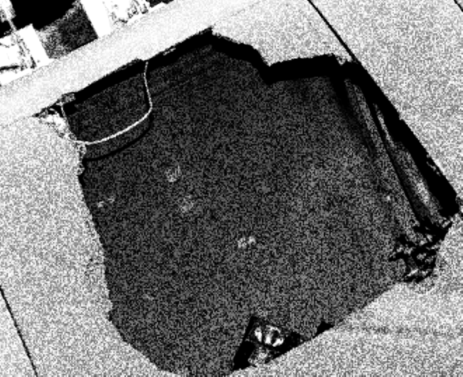</div>
          <h3>Plate<span class="verdict">Buildable for all ten</span></h3>
          <p>The treated photograph left rectangular, printed into the page like a plate in a report. A small dark rectangle carries at 92px where a pale cut-out wants more room.</p>
          <p>No silhouette to extract, so sources are unconstrained. Further from Co-Star, closer to a scholarly edition &mdash; possibly the more honest place for this project to sit.</p>
        </div>
        <div class="direction">
          <p class="rank mono">Direction 3</p>
          <div class="specimen">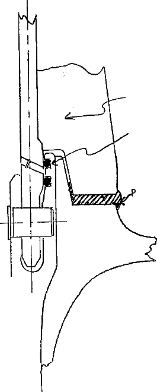</div>
          <h3>Drawing<span class="verdict verdict-bad">Fails the archive row</span></h3>
          <p>The report's own hand-drawn engineering plate &mdash; Challenger p.48, the aft field joint, hand-lettered with a technical pen. Genuinely hand-drawn texture, where a filtered photograph only imitates it.</p>
          <p>But line art at 92px is thin grey scribble, and the treatment has no midtones to bite on. Beautiful at 220px, useless at 64px. A secondary image on the report page, not the mark.</p>
        </div>
      </div>
    </section>

    <section>
      <p class="label mono"><span class="pilcrow">&#182;</span> The archive, both ways</p>
      <h2>Three reports carry a mark. Seven do not.</h2>
      <p class="lede">Deliberately: a half-built set is what this will actually look like for a while, and it is worth seeing. Rendered from this repo's own stylesheet and markup, so the comparison is against real type at real size.</p>

      <div class="compare">
        <figure>
          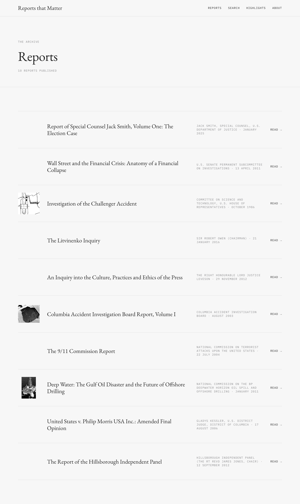
          <figcaption class="mono"><b>Plate</b>Carries at 92px. Reads as an index of documents.</figcaption>
        </figure>
        <figure>
          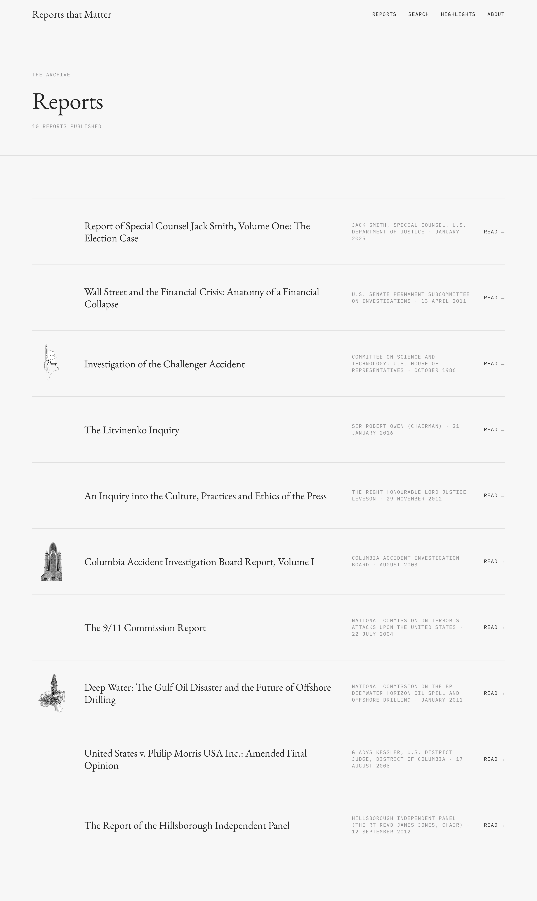
          <figcaption class="mono"><b>Cut-out</b>Quieter in the margin. Wants more room than the row gives it.</figcaption>
        </figure>
      </div>
    </section>

    <section>
      <p class="label mono"><span class="pilcrow">&#182;</span> Where else a mark lands</p>
      <h2>The header has room. The share card is the distribution case.</h2>
      <p class="lede">The report header is where the cut-out earns its keep &mdash; 220px, centred, a frontispiece. The share card is what makes a link screenshot-able, and it is the reason this is a distribution item as much as a reading one.</p>

      <div class="compare">
        <figure>
          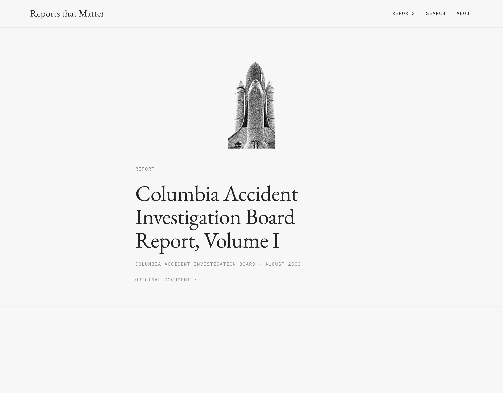
          <figcaption class="mono"><b>Report header &nbsp;·&nbsp; cut-out</b>Columbia, framed head-on in the Vehicle Assembly Building door.</figcaption>
        </figure>
        <figure>
          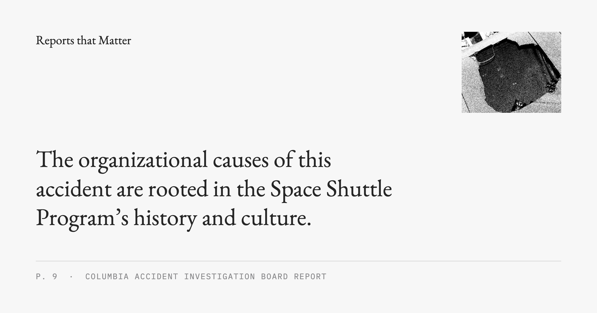
          <figcaption class="mono"><b>Share card &nbsp;·&nbsp; plate</b>The impact hole in RCC Panel 8 &mdash; the finding itself, not an illustration of it.</figcaption>
        </figure>
      </div>

      <div class="rulebox">
        <p class="statement">What I would do: plate for the archive and the share card, cut-out for the report header.</p>
        <p>One source photograph per report, treated twice. Buildable for all ten without a masking project; the cut-out gets its drama where there is room for it; the archive stays scannable. If the set has to be one thing everywhere, it should be the plate.</p>
      </div>
    </section>

    <section>
      <p class="label mono"><span class="pilcrow">&#182;</span> The taste problem</p>
      <h2>Co-Star's subjects are a moth and a peony.</h2>
      <p class="lede">Ours are Hillsborough, the towers, Deepwater, Columbia. A treated cut-out of a crowd on a terrace, floating decoratively beside a title in a listing, is a serious failure &mdash; and it is the failure the literal reading of the brief walks straight into.</p>

      <div class="rulebox">
        <p class="statement">The mark is the exhibit, never the event.</p>
        <p>The object the inquiry turned on, not the harm it caused. An O-ring. A blowout preventer. A hole punched through a wing panel. That is forensic rather than voyeuristic, it is the register the reports are written in, and it is what makes the image evidence instead of decoration.</p>
      </div>
    </section>

    <section>
      <p class="label mono"><span class="pilcrow">&#182;</span> What Co-Star's imagery actually is</p>
      <h2>Three things I would have got wrong by looking.</h2>
      <p class="lede">Measured off costarastrology.com on 12 September: every image asset pulled, its pixels read back through a canvas, its laid-out size read off the DOM. Each of these changes what you have to build.</p>

      <div class="findings">
        <div class="finding">
          <p class="what">Not one-bit</p>
          <p class="says">It looks like coarse dithered black-and-white. It is a full greyscale photograph with noise added, never thresholded. That is why it reads as aquatint rather than as a filter.</p>
          <p class="num">246&ndash;256 grey levels<br>&lt;2% pure black</p>
        </div>
        <div class="finding">
          <p class="what">Not a halftone</p>
          <p class="says">No dot grid, no rosette, no Bayer pattern at 8&times;. Grey values scattered pixel by pixel, clumping into runs of one to two &mdash; noise generated below plate resolution, then resampled up.</p>
          <p class="num">1&ndash;2px runs<br>no screen angle</p>
        </div>
        <div class="finding">
          <p class="what">Light areas are white</p>
          <p class="says">Not transparent. Composited on red, the magpie's white breast stays white. Only the region outside the outline is cut, and the cut is hard &mdash; so masking is real work, with no luminance trick that gets it for free.</p>
          <p class="num">1&ndash;5% partial alpha</p>
        </div>
        <div class="finding">
          <p class="what">The grain is the plate</p>
          <p class="says">Dot size is constant across every asset regardless of subject or size, so the texture reads as a property of the paper. This is what makes ten unrelated objects look like one body of work &mdash; and getting it wrong per-image is what makes a set fall apart.</p>
          <p class="num">fixed to output px</p>
        </div>
        <div class="finding">
          <p class="what">Two downsamples</p>
          <p class="says">Files are served at 2.5&ndash;3&times; their laid-out size &mdash; the magpie is 362px wide in a 125px slot &mdash; so the grain is averaged twice before it reaches the eye. Shown 1:1 the same file looks gritty. Ship at 3&times;.</p>
          <p class="num">362px file<br>125px slot</p>
        </div>
        <div class="finding">
          <p class="what">One slot, many shapes</p>
          <p class="says">Every object on /about sits in a 125px box &mdash; 125&times;79, 125&times;177, 125&times;213. Wildly different proportions on one shared axis. The set is held by the slot and the grain, not by cropping everything square.</p>
          <p class="num">125px &nbsp;/&nbsp; 330px</p>
        </div>
        <div class="finding">
          <p class="what">Nothing is CSS</p>
          <p class="says">Measured saturation is 0.00&ndash;0.04%: total desaturation, not <code>filter: grayscale()</code>. No asset carries a filter, blend mode or opacity. The layout receives a finished object.</p>
          <p class="num">0.00&ndash;0.04% sat.</p>
        </div>
      </div>

      <div class="single">
        <figure>
          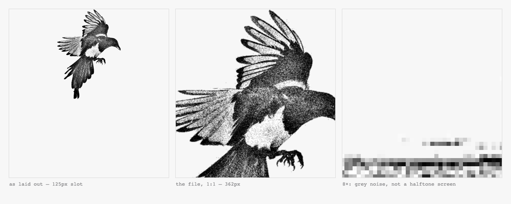
          <figcaption class="mono"><b>The grain, three ways</b>At 8&times; (right) there is no screen &mdash; just grey noise around the photograph's own luminance. Co-Star artwork, reduced and quoted for study.</figcaption>
        </figure>
      </div>

      <div class="single">
        <figure>
          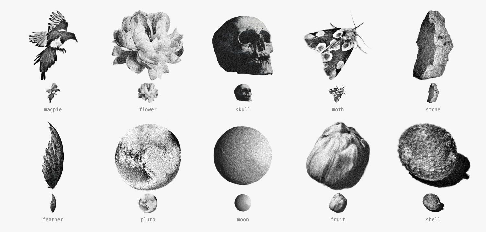
          <figcaption class="mono"><b>The vocabulary</b>Single object, no ground, no scene, no people. Mood rather than information &mdash; which is exactly what does not transfer to us unexamined.</figcaption>
        </figure>
      </div>
    </section>

    <section>
      <p class="label mono"><span class="pilcrow">&#182;</span> The logo</p>
      <h2>The seal is not low-resolution. It is over-subscribed.</h2>
      <p class="lede">26 characters wrapped around a 94px circumference is 3.6px per character. The header already serves a 64px asset into a 30px box, so a 2&times; display gets 60 device pixels for 30. The pixels are there; the design does not survive them. No redraw of the existing mark and no larger PNG fixes that.</p>

      <div class="single">
        <figure>
          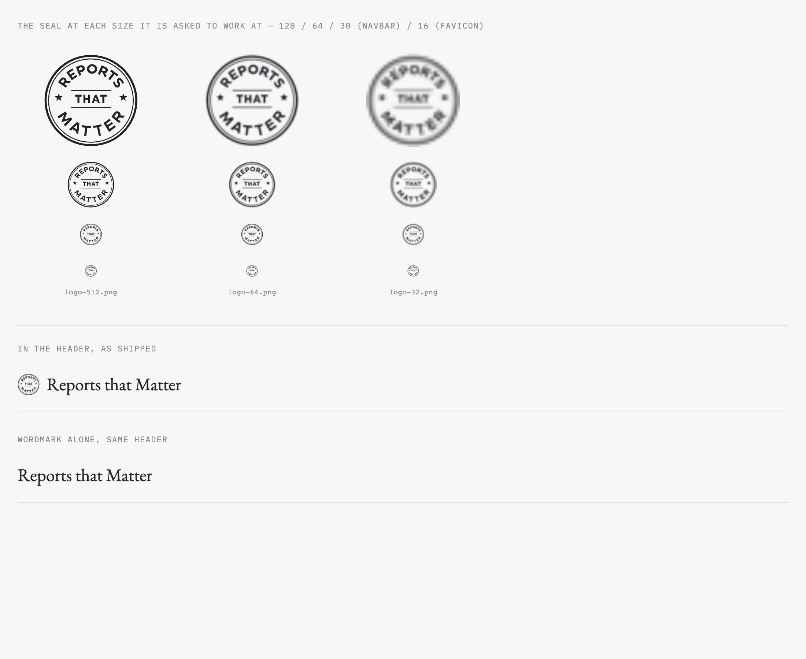
          <figcaption class="mono"><b>The seal at every size it is asked to work at</b>Fine at 128. A grey smudge at 30, which is the navbar. Bottom two rows: the header as shipped, then the wordmark alone.</figcaption>
        </figure>
      </div>

      <h3 style="margin-top:2.5rem">Two changes, independent of each other</h3>
      <p style="margin-top:0.75rem;max-width:62ch"><strong>The navbar does not need an icon at all.</strong> Co-Star's own header is a wordmark and nothing else. "Reports that Matter" in EB Garamond at 1.5rem is already a good mark; the seal beside it adds a smudge. One line to remove, and the header improves today.</p>
      <p style="max-width:62ch"><strong>A small-size mark is still needed</strong> for the favicon, the app icon, and anywhere under about 96px. Four candidates:</p>

      <div class="options">
        <div class="option">
          <p class="letter mono">a</p>
          <p class="name">Seal, lettering removed</p>
          <p>Ring, stars and rule with the words dropped. Reads as a hamburger menu. No.</p>
        </div>
        <div class="option">
          <p class="letter mono">b</p>
          <p class="name">Monogram</p>
          <p>RTM in the chrome face. Holds at 30px, mush at 16px.</p>
        </div>
        <div class="option" data-pick="yes">
          <p class="letter mono">c</p>
          <p class="name">Pilcrow in the seal</p>
          <p>Survives to 16px, keeps the seal's official-document register, and its content is the thing the site actually sells &mdash; a permanent address for every paragraph. The &#182; is already the margin affordance on every report page.</p>
        </div>
        <div class="option">
          <p class="letter mono">d</p>
          <p class="name">Pilcrow alone</p>
          <p>Cleanest at every size, but loses the stamp quality, and the descender sits awkwardly against the wordmark.</p>
        </div>
      </div>

      <div class="single">
        <figure>
          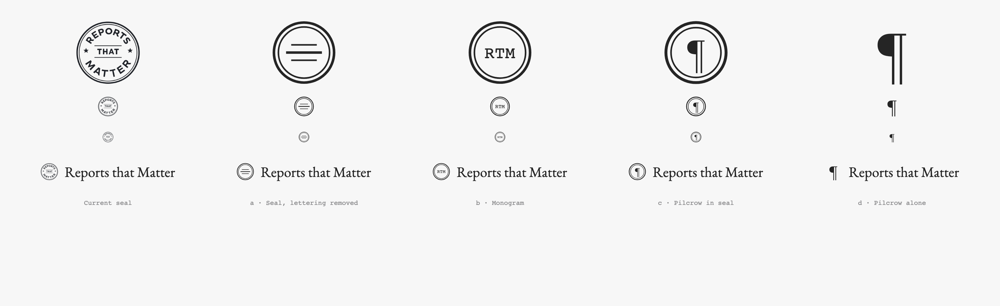
          <figcaption class="mono"><b>All five at 96px, 30px, 16px, and against the wordmark</b>Keep the full seal wherever it has 96px or more &mdash; share cards, the about page, og:image, print.</figcaption>
        </figure>
      </div>
    </section>

    <section>
      <p class="label mono"><span class="pilcrow">&#182;</span> Not done</p>
      <h2>What a decision unblocks, and what it doesn't.</h2>

      <div class="open">
        <div>
          <h3>Seven reports have no subject chosen</h3>
          <p>And four of them have no PDF cloned locally. Picking a subject per report is the slow, human half of this &mdash; the treatment is the fast half, and it already works.</p>
        </div>
        <div>
          <h3>Deepwater's photograph is credited to Transocean</h3>
          <p>The report is a public-domain U.S. Government work, but that credit line needs checking before the image ships. Recorded as unresolved in <code>sources.yaml</code>, not quietly used.</p>
        </div>
        <div>
          <h3>The Co-Star reference sheets are their artwork</h3>
          <p>Reduced and quoted for design study, with sources recorded. If that is not wanted in a public repo, delete the two PNGs &mdash; the written analysis stands without them.</p>
        </div>
      </div>
    </section>

  </div>
</main>

<footer class="wrap">
  <div class="wide">
    <p class="mono" style="margin-bottom:1.25rem">How to rebuild any of this</p>
    <p><code>pnpm marks</code> rebuilds every candidate from the report PDFs, per the recipe in <code>docs/design/2026-09-12-imagery/sources.yaml</code>. <code>pnpm mark-mockups</code> re-renders the pages above. The treatment's noise is seeded, so two runs are byte-identical &mdash; these become committed assets, and a mark that changes on every build is a diff nobody can read.</p>
    <p style="margin-bottom:0">Output is not committed. The recipe is.</p>
  </div>
</footer>
